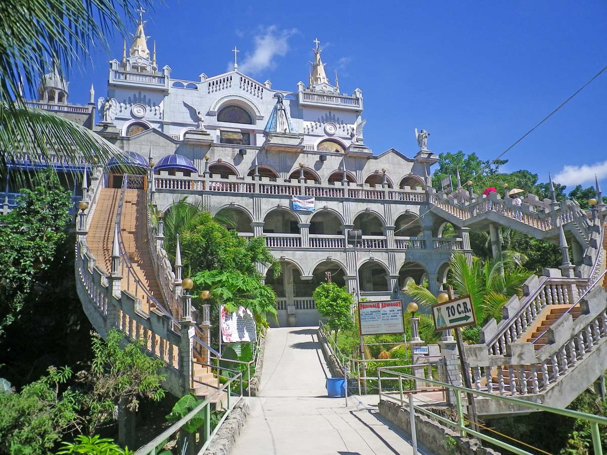
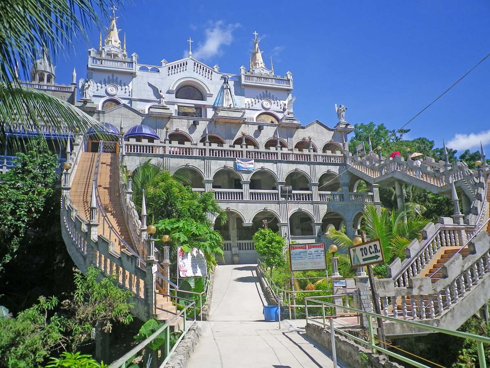

The Simala Shrine is a Roman Catholic pilgrimage site. The site hosts the image of Our Lady of Lindogon, which is believed to be miraculous by devotees of the Virgin Mary; subsequent to its reported shedding of tears, it was credited with the healing of those who were afflicted with dengue in the area in 1998.[4] The image has since that time reportedly shed tears on four more occasions, the latest being on September 8, 2016.[5] The image, originally assigned as that of Our Lady of Fatima, was donated to the Marian Monks by Terry Brooks from Pampanga. The construction of the Simala Shrine is also believed to be the realization of a prediction by Ingko Niyong Villamor that the hills of Lindogon, the current site of the shrine, would become "holy" once a "miraculous white lady reign in the place".[5]
 
